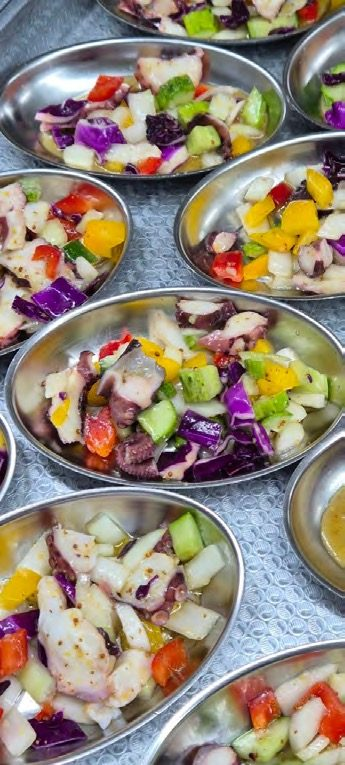
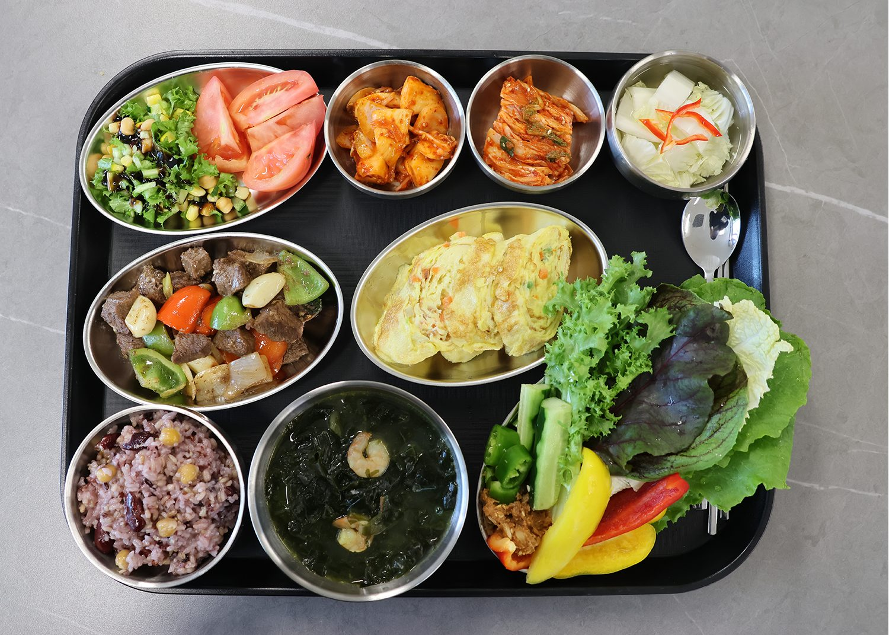

림프부종·통증·영양·피로·퇴원 후 관리
[디렉터 확인] 5페이지 분리 여부 확정 전 임시 한 페이지(D2 #51). D2는 당장 림프부종·퇴원 후 두 페이지만 두고 통증·영양·피로는 암정보 도서관 질문별 문서로 둡니다.
하일렌요양병원은 치료 시기와 관계없이 림프부종 관리와 통증·영양·피로 관리를 이어가며, 퇴원 뒤에는 외래로 회복 흐름을 함께 관리합니다. 암종이 달라도 환자가 겪는 과제는 비슷합니다. 이 페이지는 과제마다 하일렌요양병원이 하는 일과 관련 글을 모았습니다.
림프부종
림프 관리｜치료 시기와 관계없이 림프부종 관리를 꾸준히 이어갑니다.

암재활 림프 순환센터에서 림프부종 치료, 도수치료, 암재활 그룹 운동치료, 통증치료를 합니다.
입원하지 않아도 외래로 림프 관리와 도수치료를 받을 수 있습니다.
운동 범위는 주치의가 환자 상태를 보고 환자와 상담을 통해 결정합니다.
관리를 이어가도 붓기가 줄지 않거나 다시 심해지는 경우가 있습니다. 그때는 현재 진료중인 치료병원의 판단을 먼저 따릅니다.
[디렉터 확인] 항암 중 림프부종에 대한 공식 블로그 글이 없어 관련 글을 수술 후·외래 글로만 두었습니다. 항암 중 림프부종 관리 문장을 넣을지
통증
수술 직후에는 통증·상처·합병증을 세심하게 관리합니다.

수술 부위 관리는 수술한 병원의 지침을 그대로 지켜 간호팀 및 주사·상처관리팀이 이어서 살핍니다.
면역 및 통증 치료센터에서 통증·자율신경 주사치료를 하고, 암재활 림프 순환센터에서 통증치료를 합니다.
진행성 암은 통증과 증상 완화에 집중합니다.
야간 대응은 입원 안내에서 안내합니다.
항암 뒤 손발 저림이 얼마나 가는지는 기간을 숫자로 말씀드리지 않습니다. [디렉터 확인] 손발 저림을 외래 도수치료·림프 관리로 잇는 운영 문장(회복 기간 수치 없이)
통증이 줄지 않거나 갑자기 심해지는 경우가 있습니다. 그때는 참지 마시고 말씀해 주시고, 치료 방침은 치료병원의 판단을 따릅니다.
영양·식사
항암식부터 위절제식·저잔사식·저요오드식까지, 환자 상태에 맞춘 치료식을 제공합니다. [디렉터 확인] 「저잔사식」「저요오드식」 첫 등장 괄호 풀이 문장(D2 4-1 H-31). 원자료에 풀이 문장이 없어 확정 문장은 그대로 두었습니다. 검토 의료진이 풀이를 확정하면 이 자리에 괄호로 넣습니다.


입원 첫날부터 식사 이야기를 나눕니다.
식당까지 오시기 어려운 날에는 병실에서도 같은 한 끼를 드실 수 있도록 준비합니다.
입원하지 않아도 외래로 영양공급수액과 고용량 비타민C를 받을 수 있습니다.
위 절제 후 식사 단계를 올리는 기준은 치료병원의 지침을 따릅니다. [디렉터 확인] 위절제식 단계 상향 기준(의료진 확인 미완)
식사량이 늘지 않거나 체중이 계속 줄어드는 경우가 있습니다. 그때는 치료병원에 알려 주세요. [디렉터 확인] 식이 재조정 운영 문장(식사량·체중이 줄 때 원내에서 하는 일)
피로·체력
표준 치료 후에는 떨어진 체력과 신체 기능 회복을 돕습니다.
항암·방사선 치료 중에는 발열·오심·피로 등 부작용 증상을 관리합니다.
암재활 그룹 운동치료로 근력, 균형, 일상 동작을 연습합니다. 수술 부위에 따라 동작을 바꿉니다.
운동 범위는 주치의가 환자 상태를 보고 환자와 상담을 통해 결정합니다. 암재활 그룹 운동치료에 걷기 운동 프로그램은 따로 없습니다.
명상은 김성훈 수석병원장이 직접 진행합니다.
쉬어도 피로가 풀리지 않거나 잠을 못 이루는 날이 이어지는 경우가 있습니다. 그때는 참지 마시고 말씀해 주세요.
퇴원 후
하일렌요양병원의 회복 설계는 퇴원으로 끝나지 않습니다.

퇴원하실 때 앞으로의 계획을 원내 상담실과 함께 정리합니다. 집으로 돌아가신 뒤에는 카카오톡 채널로 '퇴원 후 면역관리 가이드'를 보내드립니다. 일상에서 면역을 지키는 습관과 컨디션이 흔들릴 때 확인할 점을 담았습니다.
몸이 힘든 날에는 외래나 1박 2일부터 가능한 단기입원으로 언제든 다시 관리받으실 수 있습니다.
외래로는 고주파온열암치료, 고압산소치료, 도수치료, 림프 관리, 고용량 비타민C, 면역 주사제, 영양공급수액을 받을 수 있습니다.
다음 세 경우에 외래 통원을 권합니다.
- 림프부종이나 통증이 남아 있는 분
- 입원 중 받던 관리를 이어가고 싶은 분
- 다음 항암까지의 공백 기간을 관리하고 싶은 분
[디렉터 확인] 「직장에 다니는 분. 퇴근 후 저녁 시간대로 일정을 잡을 수 있습니다」 항목은 외래 운영시간 확정 뒤 게시(D2 #29)
외래 통원 시간과 치료 종류는 단기입원·외래 회복치료 안내에서 확인할 수 있습니다.
한 달에 한 번이라도 괜찮습니다. 진료만 보러 오셔도 됩니다.
추적검사 주기는 치료병원이 정합니다. [디렉터 확인] 추적검사 일정과 외래를 잇는 운영 문장
집으로 돌아간 뒤 컨디션이 다시 흔들리는 날이 있습니다. 그때는 치료병원에 알리고, 원내 상담실에도 말씀해 주세요.
입원부터 퇴원 후 일상까지, 회복의 흐름을 하일렌요양병원이 계속 함께 살핍니다.
[디렉터 확인] 보호자 안내(퇴원한 가족을 돌보는 분께 드리는 글)를 이 절에 넣을지 — 보호자 축 콘텐츠는 8/24 디렉터 결정 대기
입원·외래·단기입원 상담은 원내 상담실에서 안내합니다. 궁금한 점 있으시면 언제든 물어보세요. [디렉터 확인] 전화·카카오 응대 가능 시간, 부재중일 때 재연락 방식(D2 9-1 신설 행)
제공 하일렌요양병원 · 검토 [디렉터 확인] 검토 의료진 · 검토일 [디렉터 확인] · 출처 하일렌 발행정본 확정 표기(2026-08-20 병원 검수), 하일렌 소식지 2026 가을호 인쇄본 뒷면 「치료 시기별 관리」와 03 「특식데이」, 2026 가을호 초안 v2 02 「퇴원이 끝은 아닙니다, 면역관리 가이드」, 퇴원 후 면역관리 가이드(노션), 하일렌 소식지 2026 여름호, 2026년 10월 프로그램 공지, 암정보 위키 04 회복관리별 「림프부종」「통증_골전이_돌발통」「영양_체중_근육」「피로_수면_정서_인지」「퇴원후_외래관리_증상모니터링」(근거 노트) · 갱신 2026-10-05 · [디렉터 확인] 위키 04 근거 노트의 핵심 흐름·표현 주의와 07 월간검증 검증통과 항목을 본문에 반영했는지(R-4) · [디렉터 확인] 근거 블록 채택과 출처 표기 방식(D2 #11)